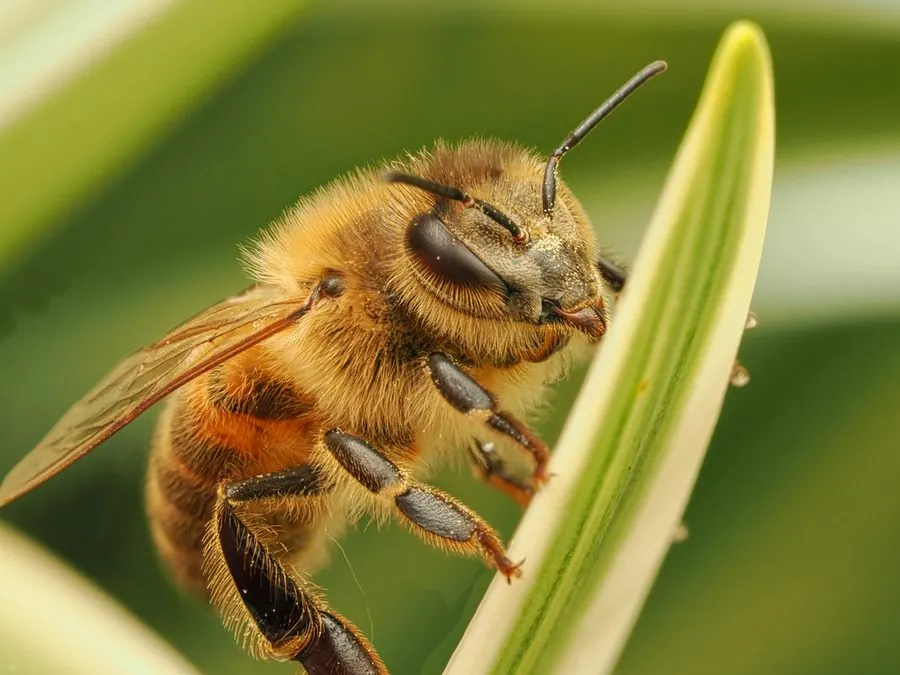

昆虫 · 动物界
西方蜜蜂 Apis mellifera

被人类驯养数千年、全球广泛饲养的经济昆虫，以酿造蜂蜜和高效传粉著称，是现代农业最重要的授粉者之一。
- 分类
- 门节肢动物门纲昆虫纲目膜翅目科蜜蜂科属蜜蜂属
- 栖息环境
- 草原、灌丛与农田蜜源区，野生蜂群多在树洞、岩缝中筑巢
- 地理分布
- 原产欧洲、非洲和中东，现随养蜂业遍布全球
- 保护级别
- 暂无评估；多地种群受蜂螨与农药威胁
物种志
西方蜜蜂体表覆盖黄褐色与黑色相间的绒毛，腹部有黑色环带，后足特化为携带花粉的花粉篮。蜂群由一只蜂王、数百至数千只雄蜂和数万只工蜂组成，工蜂按日龄分工，先后承担清洁、哺育、筑巢、守卫和采集等任务。野生蜂巢多筑于树洞或岩缝，人工饲养的蜂群则住进活框蜂箱。
工蜂以花蜜和花粉为食，采集时用喙吸取花蜜存入蜜囊，回巢后经反复吞吐和扇风脱水酿成蜂蜜，同时把花粉带入蜂巢供幼虫食用。蜂王一次婚飞可与多只雄蜂交配，此后终生产卵，日产卵可达数千枚。西方蜜蜂原产欧洲、非洲和中东，现随养蜂业遍布全球，为果树、油菜等作物授粉，是农业产值最高的昆虫之一，也面临蜂螨、农药和蜜源减少的威胁。
形态与习性
- 食性花蜜与花粉，幼虫期以蜂王浆和花粉糊为食
- 体长工蜂约 12–15 mm，蜂王 16–20 mm，雄蜂 15–17 mm
- 寿命工蜂夏季约 4–6 周，蜂王可达 3–5 年
- 繁殖蜂王日产卵约 1500–2000 枚，盛期可达 3000 枚
- 社会结构单王制蜂群，数万只工蜂按日龄分工
- 生态作用为多种果树和农作物授粉，蜂蜜、蜂王浆具经济价值
趣味知识
- 工蜂用摆尾舞和圆舞告诉同伴蜜源的方向与距离，舞步角度对应太阳方位。
- 蜂群能把巢内温度稳定在约 34–35 ℃，靠振翅扇风和集体取水降温。
- 工蜂酿成 1 kg 蜂蜜，需采集约 300 万次花朵，飞行总里程可达数十万千米。
- 蜂王终生只交配一次，精子储存在受精囊中供多年产卵使用。
生态关系
- 传粉 → 向日葵 蜜蜂为向日葵传粉